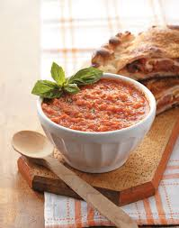

Tomato Dip

Description
Created from leftovers in the fridge and a bit of boredom, this is a simple dish that combines the
acidity of tomatoes with the creaminess of butter. This dish should only take 15 minutes to make for a small batch.
Use this recipe as a base to improve upon with your personal taste preference and experimentation.
Ingredients
- Cherry Tomatoes
- Butter
- Olive Oil
- Garlic Salt
Instructions
The following instructions are for a small serving.
- In a small pot, add 10-20 cherry tomatoes with a couple of table spoons of olive oil.
- Stir the ingredients to ensure the tomatoes are covered with a ligh layer of olive oil.
- Place the a lid on the pot and place over low heat.
- Leave lid closed for 5-10 minutes to trap heat. Shake pot every now and then make sure tomatoes
are covered in olive oil.
- After the majority of the tomatoes have popped due to the heat, open the lid, and pop the rest of
the tomatoes. Let reduce for a bit longer to concentrate the tomatoes.
- Add 1/2 tbs of butter and stir. Let reduce to desired consistancy.
- Add garlic salt to taste, remove from heat, and serve with bread.
Add your own ingredients to make it to your taste. Examples include:
- Garlic Clove
- Basil
- Cheese
Main Menu